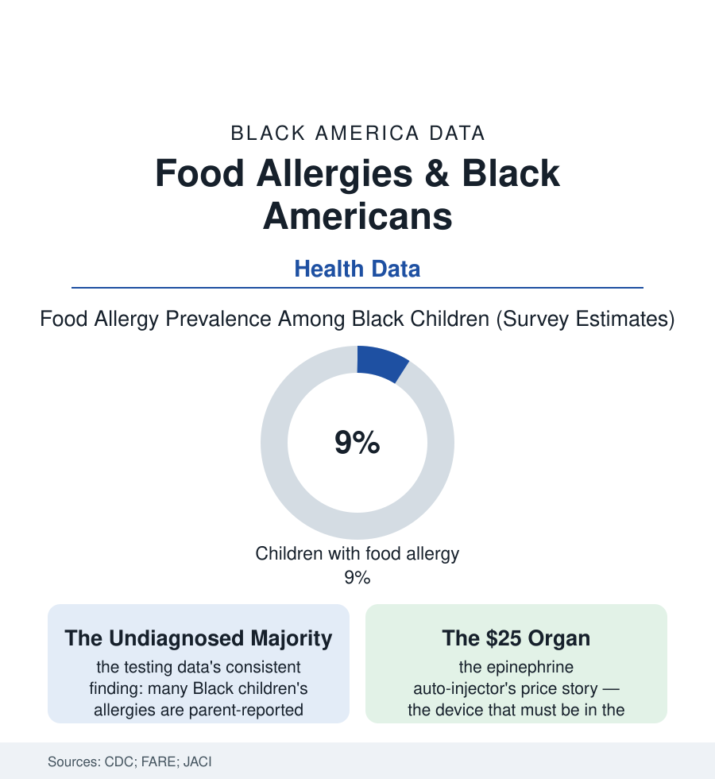

Black Public Health
The Allergy File: Food Allergies Rising Fastest in Black Children
Food allergies are climbing across America — and fastest, with the least diagnosis and the least epinephrine, among Black children. The allergy file.

Some eight percent of American children now have a food allergy in the federal surveys — a prevalence that has climbed steadily for two decades — and the climb is steepest in the population this atlas follows: Black children's reported food-allergy rates rising faster than any other group's in the CDC series, their allergies likelier to be multiple, and their management — the diagnosis, the epinephrine, the specialist — lagging farthest behind. This article reads the allergy file.
More Allergy, Less Diagnosis
The paradox at the file's center is a measurement scandal of the familiar kind: the survey data (parent-reported) show Black children with food-allergy rates at or above white children's, while the clinical data — the confirmed diagnoses, the allergist visits, the testing claims — show them diagnosed later, tested less, and prescribed epinephrine at lower rates relative to their reactions in the emergency-department studies. The emergency data carry the cost: Black children overrepresented in food-allergy ER visits and hospitalizations in the national samples, the anaphylaxis arriving, disproportionately, as the diagnosis — the first confirmed encounter with the allergy a crisis rather than a consultation. The allergen profile differs in the clinical series in ways that matter for management (the shellfish and fin-fish allergies' prominence among Black adults in the prevalence studies, wheat and soy patterns in the children's cohorts, the milk and egg allergies of infancy resolving on different timelines), and the environment rows behind the rise connect this file to the asthma article's map — the eczema-allergy-asthma progression (the 'atopic march' of the pediatric literature) concentrated in the same urban exposures, the hygiene-and-microbiome hypotheses of the research frontier running, as ever, through the neighborhoods the housing file describes. The school rows are the system's front line: the cafeteria protocols, the stock-epinephrine laws now on most states' books (the school-nurse file's new cabinet), the 504 plans whose negotiation the parent-advocacy data show sorting by the same resources as every other school negotiation in this atlas.
The adults' file runs parallel: the landmark prevalence study in the Journal of the American Medical Association's network journals put convincing food allergy at roughly one in ten American adults, with Black adults' rates above the national figure and their allergen profile distinctive — shellfish at the top of the adult list at rates markedly higher than other groups', a pattern the researchers tie to exposure, environment, and the tropomyosin cross-reactivities of the dust-mite-heavy housing stock, the allergy file and the housing file sharing a protein. Adult-onset allergy is the study's quiet headline — half of allergic adults developed at least one allergy after childhood — which means the management gap compounds across the whole life course: the grown man's first shellfish reaction at a restaurant table, in a dining culture where the server conversation the safety data recommend is one more negotiation the sociology of the room makes uneven.
The Cost of Carrying the Cure
Epinephrine is the file's pharmacy chapter, and it rhymes with the adherence article's: the auto-injector's price history (the brand device's climb to several hundred dollars a pair in the mid-2010s, the generics and the competitors since, the insurers' formularies) meeting the device's unique logistics — it expires yearly, it must be plural (school, home, the other parent's home, the purse), and its carriage is the difference between the ER's routine discharge and its worst outcome in the mortality data. The access studies find the predictable gradient: Black and low-income allergic children likelier to be without a current prescription, without the second location's set, without the allergist who manages the whole plan. The research frontier offers the file's forward rows: the oral immunotherapies (the peanut desensitization products and protocols — their trials' enrollment, per the trial-diversity file, thin in the population whose prevalence climbs fastest), the early-introduction guidelines' revolution in prevention (the landmark feeding studies reversing a generation of avoidance advice — the new guidance reaching, in the pediatric-practice data, the well-resourced nurseries first, the information gap compounding the prevalence gap into the next cohort), and the labeling regime (the sesame addition to the federal allergen list, the precautionary-label chaos the FDA's reviews document) whose clarity is itself a health input for the families reading packages in the grocery aisle's fluorescent light. The management of a food allergy is a daily logistical practice performed by families — the allergy file's subjects are, in the end, doing epidemiology at the kitchen table, with uneven tools.
Reading the Allergy Data
A rising prevalence, a lagging diagnosis, a priced cure: the allergy file is the health section in miniature — a condition whose burden is being redistributed toward Black children while its management is distributed away from them. The CDC publishes the prevalence. The school nurse's cabinet and the empty backpack pocket publish the rest.
More in Black Public Health
Hypertension Among Black Adults: Prevalence, Control, and Consequences
About 55 percent of Black adults have hypertension — the highest rate of any U.S. group. Prevalence, onset, control, and the stroke, heart, and kidney consequences in the data.
Diabetes Among Black Adults: Prevalence and Complications
Nearly one in five Black adults has diabetes, diagnosed or undiagnosed — and its complications fall with particular weight. The CDC data on prevalence, control, and outcomes.
Black Life Expectancy: The Gap at Birth and Its Causes
Black life expectancy at birth is about 73 years, roughly five years below the national figure — the summary measure of every health gap in this section. The CDC data.
Source: Centers for Disease Control and Prevention food allergy data; Journal of Allergy and Clinical Immunology studies; FARE (Food Allergy Research & Education); National Health Interview Survey.